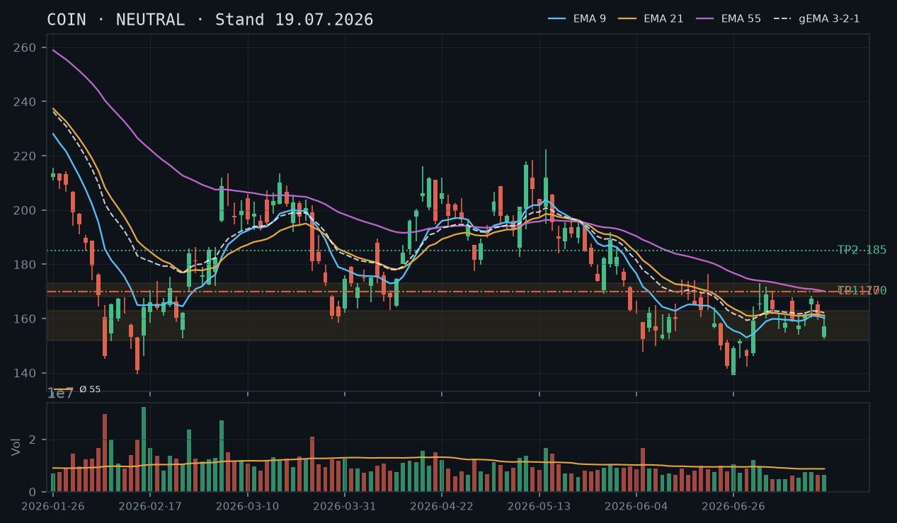
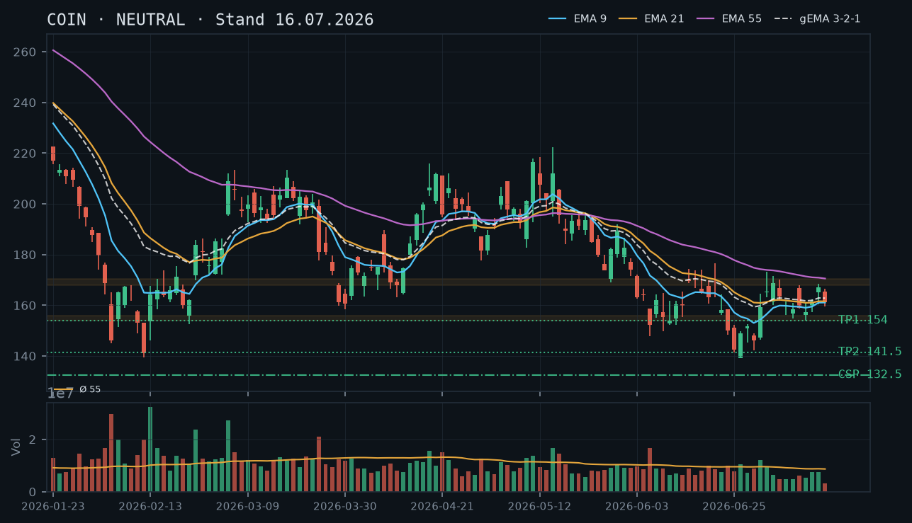
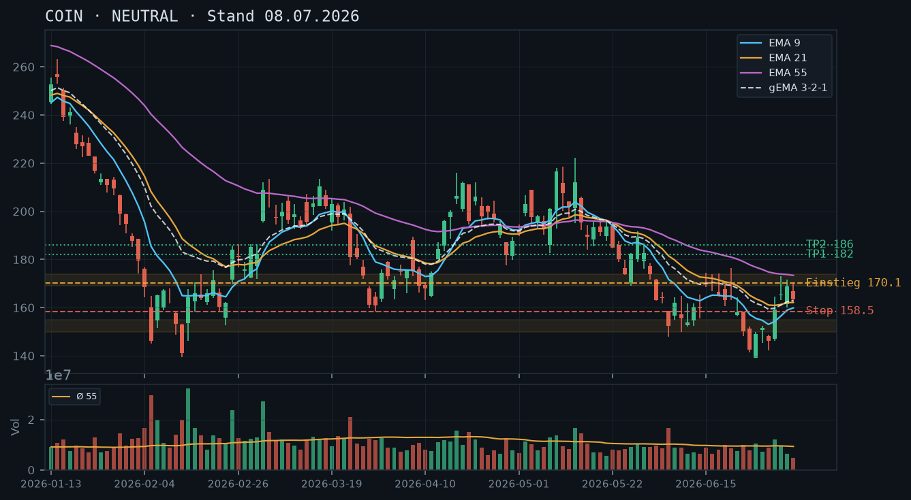

COIN
Analyse-Historie · neueste zuerstCOIN hat nach dem bullischen Ausbruch am 21. Juli (rel. Volumen 1.57x, Hoch 181.49$) wieder zurückgesetzt – die Trendwende-Bestätigung über 170$ wurde zwar intraday geholt, aber nicht gehalten; der CC aus der 19.07.-Analyse ist abgelaufen, nun bietet sich ein neuer Covered Call auf den bestehenden 800er-Bestand an.

1 · Trendstruktur
Der übergeordnete Abwärtstrend, der sich seit April 2026 von ~216$ aufgebaut hat, zeigt erste strukturelle Risse: Das Swing-Low bei 141.48$ (25.06.) hält, und am 21. Juli wurde mit einem Intraday-Hoch von 181.49$ erstmals wieder ein höheres Hoch gegenüber dem Juli-Hoch 170.09$ (07.07.) etabliert – eine potenziell bullische Strukturänderung. Allerdings folgte am 22. Juli ein deutlicher Rücksetzer auf 166.12$ (Close), und der aktuelle Kurs bei 167.66$ pendelt wieder in der alten Konsolidierungszone 157–170$. Die Trendwende ist nicht bestätigt: Ein nachhaltiger Close über 175–176$ (Hoch vom 22. Juni: 176.48$) wäre notwendig. Kurzfristig ist die Zone 163–170$ als Battleground zu verstehen.
2 · Candlestick-Formationen
Der 21. Juli war ein starker bullischer Kerzentag (Open 167.89$, Close 175.85$, rel. Volumen 1.57x) mit engem Doji-Charakter am oberen Ende – signifikante Kaufkraft. Der 22. Juli folgte als bearisher Innentag (High 174.96$, Close 166.12$) mit Schlusskurs unterhalb des Eröffnungsniveaus – ein klassischer Bearish Engulfing-Ansatz, der die Bullen noch nicht überzeugen konnte. Dieser zweitägige Ablauf (Spike & Reversal) warnt vor voreiligem Long-Engagement und bestätigt den Widerstandscharakter des 174–176$-Bereichs.
3 · EMA-Lage (9 / 21 / 55)
EMA9 (163.90$) < EMA21 (162.73$) > EMA55 (169.79$) – eine ungewöhnliche Reihenfolge, bei der EMA21 zwischen EMA9 und EMA55 liegt, was als Kompressions-Artefakt einer laufenden Erholung aus dem Abwärtstrend zu werten ist. Der gema_321 bei 164.49$ spiegelt den Schwerpunkt der EMA-Masse wider. Positiv: EMA9 und EMA21 konvergieren nach oben. Kritisch: EMA55 bei 169.79$ liegt noch über dem aktuellen Kurs (167.66$) und bildet den nächsten dynamischen Widerstand. Ein Schlusskurs klar über dem EMA55 wäre ein weiteres bullisches Signal.
4 · Trade-Setup
| Richtung | Long |
| Einstieg | 176.00$ (Stop-Buy über das Hoch vom 22. Juni 176.48$ und das 21.-Juli-Hoch-Cluster) |
| Stop | 161.00$ (unter den Konsolidierungsboden 163$) |
| Ziel | 195.00$ (Gap-Close April / ehem. Support-Cluster) |
| CRV | 2.5 : 1 |
5 · Stillhalter (max. 12 Tage)
Mit 800 Aktien im Bestand und einem Kurs, der nach dem Spike am 21. Juli wieder zurückgefallen ist, ist ein neuer Covered Call der logische Schritt. Der CC vom 19. Juli (Strike 170$, Verfall 25. Juli) ist abgelaufen – je nach Kursstand bei Verfall war er entweder wertlos oder wurde ausgeübt. Aktuell bietet die Zone 175–176$ einen technisch sauberen CC-Strike oberhalb des kurzfristigen Hochs. Ein neuer CSP ist nicht angebracht: Das Depot ist bereits mit 800 Aktien exponiert, ein weiterer Put würde das Abwärtsrisiko unkontrolliert erhöhen.
| Geschäft | Covered Call |
| Strike | 177.5 |
| Puffer | 5.9 % |
| Zone | oberhalb Widerstandscluster 174–176.48$: Hoch vom 22. Juni (176.48$), Intraday-Hoch 21. Juli (181.49$ – nicht konsolidiert), bearisher Reversal-Bereich 22. Juli (High 174.96$) |
| Verfall bis | 2026-08-01 (9 Tage, nächster Standard-Freitag nach heute 23. Juli) |
| Begründung | Der Strike 177.50$ liegt ~5.9% über dem aktuellen Kurs (167.66$) und klar oberhalb des bestätigten Widerstandsclusters bei 174–176.48$. Der Kurs müsste zunächst das Bearish-Reversal vom 22. Juli überwinden (High 174.96$) und dann das Juni-Hoch bei 176.48$ durchbrechen – zwei technische Hürden vor Bedrohung des Strikes. Bei Andienung würde man den Bestand zu 177.50$ abgeben: ein Niveau, das noch unter dem EMA55-Trend (fallend, aktuell 169.79$) liegt, aber über dem Juli-Ausbruchshoch – vertretbares Abgabeniveau. Prüfe in der Optionskette: Delta sollte im Bereich -0.20 bis -0.28 liegen; bei COIN mit typisch erhöhter IV nach dem Volatilitäts-Spike sollte die Prämie für 9 Tage wirtschaftlich sein (manuell prüfen). Roll-Trigger: Wenn COIN über 175$ mit zwei bullischen Closes schließt, CC defensiv auf Strike 182.50$ rollen oder auf den 08. August verlängern (max. 12 Tage ab Roll-Datum). |
Bestand: Aktienbestand Long (800 Aktien). Kein offener Short auf Optionsseite laut IBKR-Snapshot (11:36 Uhr, 23. Juli). Der CC Strike 170$ vom 19. Juli (Verfall 25. Juli) scheint nicht mehr im Snapshot zu erscheinen – prüfe, ob er abgelaufen ist oder bereits geschlossen wurde, bevor ein neuer CC verkauft wird, um Doppeldeckung zu vermeiden. Empfehlung: Neuen Covered Call Strike 177.50$, Verfall 01. August 2026 verkaufen. Bei Anstieg über 175$ mit bullischem Momentum: Roll auf 182.50$, Verfall max. 08. August. Bei Rückfall unter 158$: CC zu geringem Verlust zurückkaufen (Delta nahe 0), danach Neubewertung auf niedrigerem Strike (z.B. 165$ oder 167.50$).
Ausführliche Analyse vom 23.07.2026 anzeigen
COIN – Detailanalyse vom 23. Juli 2026
1. Trendstruktur – Strukturbruch oder Falle?
Der primäre Abwärtstrend läuft seit dem Aprillhoch bei ~216$ (17. April). Die Abwärtswellen verliefen sauber: niedrigere Hochs, niedrigere Tiefs – das absolute Tief bei 141.48$ am 25. Juni. Dann begann eine Erholung: 01. Juli Close 159.24$ (rel. Volumen 1.25x – erste echte Kaufkraft), 02. Juli High 173.09$, was zunächst als Erholungsrally interpretiert werden konnte.
Der entscheidende Tag: 21. Juli 2026 – COIN öffnet bei 167.89$ und schließt bei 175.85$ auf dem höchsten Close seit dem 17. Juni. Das rel. Volumen lag bei 1.57x dem 55er-Schnitt – signifikante institutionelle Beteiligung. Das Intraday-Hoch 181.49$ überschritt das Juli-Hoch 170.09$ klar und etablierte ein potenziell höheres Hoch in der Struktur.
JEDOCH: Der 22. Juli folgte mit einem klassischen Reversal – Open 172.25$, High 174.96$, Close 166.12$ auf normalem Volumen (0.80x). Der Kurs gab fast 60% des 21.-Juli-Gewinns wieder ab. Das ist kein bullisches Verhalten in einem neuen Uptrend. Fazit Trendstruktur: Potenzielle Trendwende im Werden, aber noch nicht bestätigt. Der Bereich 174–176.48$ (Hoch 22. Juni) ist harter Widerstand. Ein Close darüber wäre der erste echte Bestätigungsschritt.
Abgleich historische Analysen: Das Long-Setup aus der 08.07.-Analyse (Stop-Buy über 170$) wurde am 21. Juli intraday getriggert (High 181.49$), aber am 22. Juli wieder unter 170$ zurückgefallen – wer auf Schlusskursbasis handelt, war nie drin. Das Abwarten der 16.07.- und 19.07.-Analyse war korrekt. Der CC-Fokus der 19.07.-Analyse war die richtige Reaktion auf die Seitwärtsdrift.
2. Candlestick-Formationen
Die letzten relevanten Kerzen im Überblick:
- 17. Juli: Bearisher Tag (Open 153.36$, Close 157.12$) – Erholung vom Tief, aber schwach.
- 20. Juli: Innentag, Close 160.43$ – Konsolidierung, kein Momentum.
- 21. Juli: Starke bullische Marubozu-ähnliche Kerze (167.89$→175.85$, rel. Vol. 1.57x). Long Shadow oben (Hoch 181.49$) deutet auf Selling-Pressure bei höheren Kursen – kein reiner Squeeze-Ausbruch, sondern Verkäufer bei 180$+.
- 22. Juli: Bearisher Innentag / Shooting-Star-Ansatz. High 174.96$, Close 166.12$. Der Kurs konnte das Hoch des Vortages nicht halten. Diese Kerze allein ist kein starkes Umkehrsignal, aber in Kombination mit dem Widerstandsniveau ein klares Warnsignal.
Der aktuelle Stand (23. Juli, Intraday +0.93%, Kurs 167.66$) zeigt eine moderate Erholung vom Vortagsclose 166.12$ – noch nicht aussagekräftig ohne Tagesabschluss.
3. EMA-Analyse und gema_321
Stand 22. Juli Close: EMA9 = 163.90$, EMA21 = 162.73$, EMA55 = 169.79$, gema_321 = 164.49$.
Die Reihenfolge EMA9 > EMA21, aber beide unter EMA55, ist ein klassisches Kompressions-Artefakt: Die kurzfristigen EMAs erholen sich schneller, sind aber noch nicht über den langfristigen EMA55 gestiegen. Das ist typisch für eine frühe Erholungsphase nach einem Abwärtstrend – noch kein Golden-Cross-Signal, aber die Richtung stimmt.
Der EMA55 bei 169.79$ ist der erste dynamische Widerstand. Der aktuelle Kurs 167.66$ liegt ~2.1$ darunter. Ein Close über 170$ wäre sowohl ein strukturelles Signal (über Juli-Hoch) als auch ein EMA55-Breakout – Konfluenz-Punkt. Der gema_321 bei 164.49$ fungiert als kurzfristige Unterstützung.
Der EMA55 fällt noch (von 170.05$ am 19.07. auf 169.79$ am 22.07.) – die übergeordnete Kraft drückt noch leicht nach unten. Eine Stabilisierung oder Trendwende im EMA55 wäre ein weiteres bullisches Signal in den kommenden Wochen.
4. Trade-Setups (Direkt-Handel)
Setup A (bevorzugt – Break-Out-Long):
- Einstieg: Stop-Buy bei 176.00$ (über den Widerstand 174.96$/176.48$)
- Stop: 161.00$ (unter Konsolidierungsboden ~163$)
- Ziel 1: 185.00$ (ehem. Widerstand April) → CRV zu Ziel 1: 0.6:1 (zu eng)
- Ziel 2: 195.00$ (Gap-Cluster / April-Niveau) → CRV zu Ziel 2: 1.9:1
- Ziel 3: 206.00$ (Aprillhoch-Bereich) → CRV zu Ziel 3: 2.5:1 ✓
- Anmerkung: Setup erst sinnvoll mit Bestätigung. Bei 800 Aktien im Bestand ggf. keinen separaten Trade eröffnen.
Setup B (konservativ – EMA55-Breakout):
- Einstieg: Stop-Buy bei 170.50$ (über EMA55 ~170$ und psychologische Marke)
- Stop: 161.00$
- Ziel: 185.00$
- CRV: 1.5:1 – suboptimal, aber technisch sauber
Setup C (kein Trade empfohlen): Short unterhalb 155$ mit Stop 163$ und Ziel 141$ wäre denkbar, ist aber angesichts der strukturellen Erholung vom Tief und des bestehenden Aktienbestands kontraproduktiv und wird nicht empfohlen.
5. Stillhalter-Strategien (Schwerpunkt)
Covered Call – Strike 177.50$, Verfall 01. August 2026
Zonen-Herleitung: Der Strike 177.50$ wurde aus folgenden technischen Ebenen abgeleitet:
- Hoch 22. Juni: 176.48$ – bisher nur einmal getestet, unbestätigter Widerstand, aber erstes relevantes Niveau oberhalb des aktuellen Kurses
- Bearisher Reversal-Bereich 22. Juli: High 174.96$ – der Markt hat hier Verkäufer gezeigt
- Strike 177.50$ liegt 1$ über dem Juni-Hoch und stellt sicher, dass zwei technische Hürden (174.96$ und 176.48$) als Puffer VOR dem Strike liegen, nicht dahinter
- Puffer zum aktuellen Kurs (167.66$): 5.9% – ausreichend für 9 Tage Laufzeit bei COIN's üblicher IV
Andienungsszenario: Wird der Strike 177.50$ erreicht und der CC ausgeübt, würden die Aktien zu 177.50$ abgegeben. Dies ist ein technisch vertretbares Niveau – über dem EMA55 (169.79$), aber noch im Bereich unbestätigter Widerstände. Ein Abgang zu 177.50$ wäre kein Verlust-Szenario, da der Kaufkurs des Bestands nicht bekannt ist, aber strukturell wäre es ein Exit im oberen Bereich der aktuellen Erholung vor dem nächsten Widerstandscluster (185$+).
Roll-Trigger:
- Wenn COIN vor dem 01. August zwei aufeinanderfolgende bullische Closes über 175$ produziert: CC defensiv auf Strike 182.50$, Verfall 08. August rollen (max. 12 Tage ab Roll-Datum). Dies sichert mehr Upside-Partizipation, falls die Trendwende sich beschleunigt.
- Wenn COIN unter 158$ fällt (unter gema_321 und in die alte Konsolidierung zurück): CC zu geringem Restpreis zurückkaufen (Delta nähert sich 0), Prämie einstreichen, Position schließen. Danach neues CC-Level bei 165$ oder 167.50$ prüfen.
- Wenn der CC am 01. August wertlos verfällt: neuen CC für die Folgewoche bewerten.
Was in der Optionskette zu prüfen ist: Delta des 177.50$-Strikes sollte zwischen -0.20 und -0.28 liegen. COIN hat als Crypto-Aktie typisch erhöhte implizite Volatilität (IV), besonders nach dem Volatilitäts-Spike vom 21. Juli – das sollte die Prämien für kurze Laufzeiten attraktiv machen. Liquidität: COIN ist optionsliquid, Spread sollte eng sein. Prüfe Mid-Preis und stelle Limit nahe am Mid.
CSP – Kein Setup (begründet)
Ein Cash-Secured Put wird weiterhin nicht empfohlen. Der Aktienbestand von 800 Stück bedeutet, dass das Abwärtsrisiko bereits voll getragen wird. Ein zusätzlicher CSP würde dieses Risiko verdoppeln, ohne eine ökonomische Notwendigkeit zu erzeugen. Qualität vor Vollständigkeit.
Wichtiger Hinweis IBKR-Snapshot: Der Snapshot vom 23. Juli 11:36 Uhr zeigt keine offenen Optionspositionen mehr. Der CC Strike 170$, Verfall 25. Juli aus der 19.07.-Analyse erscheint nicht mehr – prüfe vor dem Verkauf des neuen CC, ob die Position tatsächlich abgelaufen oder geschlossen wurde. Ein versehentliches Doppeldecken (2 Short Calls auf 800 Aktien) wäre nur mit 800er-Bestand gedeckt – je nach Kontrakt-Strukturierung könnte ein zweiter CC-Kontrakt zu einem Naked-Call-Element werden. Klärung vor Eröffnung zwingend notwendig.
COIN kämpft in der 157-168$-Konsolidierungszone ohne klares Momentum – der übergeordnete Abwärtstrend ist technisch noch intakt, aber ein Covered Call auf den vorhandenen Aktienbestand bietet sich bei aktueller Seitwärtsdrift an.

1 · Trendstruktur
Der übergeordnete Abwärtstrend bleibt strukturell intakt: Die Sequenz fallender Hochs und Tiefs seit dem Februar-Peak (~220$+) ist nicht gebrochen. Das Swing-Low vom 25. Juni bei 141.48$ bildet den aktuellen Anker. Die Erholung seit dem 30. Juni (146.19$) hat zwar die 168$-Marke angelauft (Hoch 07. Juli: 170.09$), konnte diese aber nicht schließen – das Long-Signal aus der Juli-Analyse (Stop-Buy über 170$) wurde nie getriggert und ist weiterhin offen. Der aktuelle Schlusskurs von 157.12$ (17. Juli) liegt in der Kernzone 152-163$, die seit Mitte Juni mehrfach getestet wurde. Die Marktstruktur bleibt bärisch solange kein höheres Hoch über ~173$ etabliert ist.
2 · Candlestick-Formationen
Die letzte verfügbare Kerze (17. Juli) zeigt eine bearishe Struktur: Eröffnung 153.36$, Close 157.12$ – zwar ein leichtes Recovery, aber die Kerze eröffnete mit einem markanten Gap-Down unter das vorherige Tief (~160$). Die Vortageskerze (16. Juli, Close 160.49$) bildete einen Inside-Bar relativ zu den Vortagen. Das Volumen der letzten vier Sessions liegt durchgehend unter dem 55er-Durchschnitt (rel. Volumen 0.52–0.86) – kein institutionelles Kaufinteresse erkennbar. Die Kerze vom 01. Juli (rel. Volumen 1.25, starker Aufwärtstag von 147$ auf 159$) war der stärkste Erholungsimpuls, der aber nicht weiter bestätigt wurde.
3 · EMA-Lage (9 / 21 / 55)
EMA-Lage per 17. Juli: EMA9 = 160.18$, EMA21 = 161.10$, EMA55 = 170.05$, gema_321 = 162.13$. Die klassische Bären-Reihenfolge EMA9 < EMA21 < EMA55 ist vollständig intakt – alle drei fallen weiterhin. Der Kurs (157.12$) liegt unter allen drei EMAs, was die Short-Bias bestätigt. Bemerkenswert: EMA9 und EMA21 komprimieren sich auf ~1$ Abstand, was kurzfristig eine Verdichtungsphase signalisiert. Der gema_321 bei 162.13$ fungiert als dynamischer Deckel. Die früheren Analysen-Aussagen zu fallenden EMAs werden voll bestätigt.
4 · Trade-Setup
| Richtung | Kein Trade |
| Einstieg | Stop-Buy bei 170.20$ (Bestätigung über das Juli-Hoch 170.09$) – Setup aus 08.07. weiterhin gültig, aber nicht getriggert |
| Stop | 158.50$ |
| Ziel | 185.00$ |
| CRV | 1.3 : 1 (nach wie vor suboptimal – abwarten) |
5 · Stillhalter (max. 12 Tage)
Mit 800 Aktien im Bestand ist ein Covered Call das logische Instrument der Stunde. Die Seitwärtsdrift ohne bullisches Momentum und die dichten EMAs als Deckel bei 160-162$ schaffen eine solide Basis für einen CC auf Widerstandsniveau. Ein neuer CSP ist in dieser Phase unnötig – das Depot ist bereits exponiert, ein weiterer Put würde das Abwärtsrisiko unkontrolliert erhöhen.
| Geschäft | Covered Call |
| Strike | 170.0 |
| Puffer | 8.2 % |
| Zone | Widerstandscluster 168-173$: Juli-Hoch 170.09$ (07.07.), Tagesbereich 15. Juli (High 168.50$), und unbestätigter Bereich um das Hoch vom 22. Juni (176.48$) |
| Verfall bis | 2026-07-25 (6 Tage, nächster Standard-Freitag) |
| Begründung | Der Strike 170$ liegt exakt auf dem Juli-Swing-High vom 07. Juli (170.09$) – ein mehrfach getestetes Widerstandsniveau, das bisher nicht überwunden wurde. Der Kurs müsste ~8.2% zulegen, um diesen Strike zu bedrohen. Bei Andienung (d.h. wenn COIN über 170$ steigt und Aktien abgerufen werden) würde man den Bestand zu einem Kurs abgeben, der noch unterhalb aller relevanten EMA-Widerstände (EMA55 = 170.05$ – fast identisch) liegt: dies ist ein vertretbares Abgabeniveau. Das Short-Signal der Analyse bleibt dadurch unberührt. Prüfe in der Optionskette: Ist die Prämie für 6 Tage Laufzeit bei Strike 170$ wirtschaftlich (Delta sollte zwischen -0.20 und -0.30 liegen)? IV-Niveau in einem Crypto-Titel wie COIN typischerweise erhöht – nutze das. Roll-Trigger: Wenn COIN in den nächsten Tagen über 167$ schließt und Momentum aufbaut, CC defensiv auf 172.50$ rollen oder glätten. |
Bestand: Aktienbestand vorhanden (Long-Position). Kein offener Short auf Optionsseite laut Snapshot. Empfehlung: Covered Call zum Strike 170$ verkaufen, Verfall 25. Juli 2026. Bei einem Anstieg über 167$ mit zwei aufeinanderfolgenden bullischen Closes: Roll auf Strike 172.50$, gleicher Verfall oder 01. August (max. 12 Tage). Bei weiterem Rückgang unter 150$: CC kann zu geringem Verlust zurückgekauft werden (Delta nähert sich 0), danach Neubewertung ob neuer CC auf niedrigerem Strike sinnvoll.
Ausführliche Analyse vom 19.07.2026 anzeigen
COIN – Technische Analyse & Stillhalter-Report (19.07.2026)
Abgleich mit früheren Analysen
Die Analyse vom 08.07. formulierte ein bedingtes Long-Setup via Stop-Buy über 170$ mit Ziel 185$ und CRV 1.3:1. Dieses Setup wurde nie getriggert – das Juli-Hoch lag bei 170.09$ (07. Juli), ohne einen Tagesschluss darüber zu produzieren. Die Grundthese aus beiden Voranalysen ('übergeordneter Abwärtstrend intakt, EMAs fallen, keine Trendwende bestätigt') wird durch die heutigen Daten vollständig bestätigt. Der konservative CSP bei 132.50$ aus der Analyse vom 16.07. war angemessen – er liegt weiterhin deutlich unter dem Markt und hätte keine Andienungsgefahr erzeugt. Ein neuer CSP ist heute nicht notwendig (Begründung folgt).
1. Trendstruktur
Die Hochs-Tiefs-Sequenz der letzten Monate ist eindeutig: Feb/März-Hochs (~220$) → Tief 141.48$ (25. Juni). Das ist ein Verlust von ~35% Spitze-zu-Tief. Die aktuelle Erholung hat folgende Marken gesetzt:
- Swing-Low: 141.48$ (25. Juni) – absoluter Anker der aktuellen Bewegung
- Erholungshoch: 173.09$ (02. Juli, Intraday-High) / Schluss-High 168.87$ (06. Juli)
- Jüngste Schwäche: Rückfall auf 157.12$ (17. Juli, Schluss) nach gescheitertem Ausbruch
Solange kein Schluss über 173$ (Bereich des Juli-Highs vom 02. Juli) gelingt, ist die Trendwende nicht bestätigt. Ein Bruch unter 150$ würde das nächste Ziel bei 141.48$ und darunter bei ~130-132$ (Fibonacci-Extension) aktivieren. Die Zone 152-163$ fungiert als Kernkonsolidierungszone der letzten vier Wochen – mehrfach getestet von beiden Seiten.
2. Candlestick-Formationen
Die Kerzenstruktur der letzten fünf Sessions zeigt eine klare Ermüdung der Erholungsbewegung:
- 15. Juli (Close 167.21$, rel. Vol. 0.86): Bullische Kerze, testete 168.50$ Intraday – scheiterte jedoch genau am Widerstand
- 16. Juli (Close 160.49$, rel. Vol. 0.72): Inside-Bar / Bearishe Engulfing-Komponente – Reversals-Signal
- 17. Juli (Open 153.36$, Close 157.12$, rel. Vol. 0.74): Gap-Down beim Open unter die 155$-Marke, partielle Recovery – kein Stärke-Signal
Das Volumen aller Sessions seit dem 08. Juli liegt unter dem 55er-Durchschnitt (rel. Volumen 0.52–0.86). Das ist charakteristisch für eine technische Bounce-Bewegung ohne institutionelle Unterstützung. Kontrast: Der Abverkauf am 05. Juni (rel. Vol. 1.63) und 24./26. Juni (1.06/1.10) war volumenbestätigt – bärische Distribution.
3. EMA-Analyse
Per 17. Juli: EMA9 = 160.18$ | EMA21 = 161.10$ | EMA55 = 170.05$ | gema_321 = 162.13$.
Die klassische Bären-Reihenfolge EMA9 < EMA21 < EMA55 ist vollständig intakt und alle drei Linien fallen noch. Der Kurs bei 157.12$ liegt unter dem gesamten EMA-Verbund – bearish. Die enge Kompression zwischen EMA9 (160.18$) und EMA21 (161.10$) auf nur ~0.92$ Abstand ist ein Kompressions-Artefakt: Wenn der Kurs kurz über, dann wieder unter die kurzfristigen EMAs taucht, konvergieren diese temporär. Das löst sich erst durch einen klaren Trendimpuls auf.
Der gema_321 = 162.13$ ist der relevanteste dynamische Widerstand: Er gewichtet EMA9 dreifach und liegt damit nah am aktuellen Kurs. Schlusskurse über dem gema_321 wären ein erstes Zeichen von Stärke – bisher nicht erreicht.
4. Trade-Setups (Aktie)
Setup A – Long-Momentum (bevorzugt, unverändert aus 08.07.): Stop-Buy bei 170.20$ (über das Juli-Hoch 170.09$ vom 07.07.), Stop bei 158.50$ (unter letztes Reaktionstief), Ziel 1: 183-185$ (Vorkrisenniveau), CRV ~1.3:1. Qualitätsmangel bestätigt – CRV unter 2:1, Setup bleibt bedingt und ist nicht priorisiert.
Setup B – Short-Continuation (spekulativ): Einstieg bei Tagesschluss unter 150.00$ als Bestätigung des Bruchs der Konsolidierungsunterkante, Stop bei 157$, Ziel 141.48$ (Swing-Low) und Extension 132-130$. CRV zu Ziel 1: ~1.1:1 – ebenfalls unattraktiv. Kein Trade empfohlen.
Setup C – Range-Play (neutral): Innerhalb der Zone 152-168$ kein direktionaler Trade – zu enge Range, Volumen spricht gegen Breakout-Qualität.
Fazit Aktien-Setup: Kein neuer Direktional-Trade. Abwarten auf Setup A (Trigger 170.20$) oder auf einen volumenbestätigten Bruch unter 150$.
5. Stillhalter-Analyse (Schwerpunkt)
Positionslage
Laut IBKR-Snapshot (19.07.2026, 12:08 Uhr): Aktienbestand vorhanden, keine offenen Optionspositionen auf COIN. Der Aktienbestand ist ausreichend für Covered Calls (mindestens 100 Aktien pro Kontrakt – mehrfach erfüllt). Ein Covered Call ist das saubere, risikokontrollierte Instrument der Wahl.
Warum kein neuer CSP?
Ein zusätzlicher Cash-Secured Put würde das Abwärtsrisiko des Portfolios in COIN kumulieren: Man ist bereits via Aktienbestand long exponiert. Ein CSP im aktuellen, noch intakten Abwärtstrend ohne Trendwende-Bestätigung würde im Andienungsfall zu einer deutlich vergrößerten Long-Position führen – ohne zusätzlichen strategischen Grund. Der CSP aus der Voranalyse (Strike 132.50$) war als extremer Discount-Kauf konzipiert; dieses Setup entfällt heute, da es keinen neuen Anlass gibt. Qualität vor Vollständigkeit.
Covered Call – Zonen-Herleitung Strike 170$
Folgende technische Marken bilden den Widerstandscluster um 168-173$:
- 170.09$: Intraday-Hoch vom 07. Juli – der bisherige Erholungshöhepunkt; mehrfach angelaufen, nicht überwunden
- 170.05$: EMA55 (fallend) – klassischer dynamischer Deckel im Abwärtstrend; nahezu identisch mit dem Strike
- 168.50$: Hoch vom 15. Juli – zweiter Test des Bereichs ohne Ausbruch
- 173.09$: Hoch vom 02. Juli – obere Begrenzung der Widerstandszone
Ein CC-Strike bei 170.00$ liegt damit exakt am Schnittpunkt von technischem Swing-High und dem EMA55-Deckel. Der Kurs müsste 8.2% zulegen, um ihn zu erreichen. Das ist angemessener Puffer für eine 6-Tage-Option.
Andienungsszenario (CC Strike 170$)
Wenn COIN bis zum 25. Juli auf über 170$ steigt und die Aktien abgerufen werden: Man gibt Aktien zu 170$ ab – einem Niveau, das charttechnisch noch als Widerstand gilt und unterhalb des nächsten nennenswerten Ziels (185$) liegt. Das ist ein vertretbares Abgabeniveau. Die Optionsprämie kompensiert das entgangene Upside teilweise. Psychologische Überlegung: Wer den Bestand langfristig halten will, sollte den Strike ggf. auf 172.50$ anheben – das reduziert Andienungswahrscheinlichkeit, senkt aber auch die Prämie.
Roll-Logik und Trigger
Konkrete Bedingungen für eine Anpassung:
- Roll-hoch-Trigger: Zwei aufeinanderfolgende Tagesschlüsse über 167$ mit rel. Volumen > 1.0 → CC auf 172.50$ rollen (gleicher Verfall 25. Juli oder 01. August, max. 12 Tage)
- Glatt-stellen-Trigger: Kurs fällt unter 150$ (Bruch der Konsolidierung) → CC hat dann minimalen Zeitwert, Rückkauf günstig möglich; neuer CC tiefer setzt neue Zone voraus
- Verfallslassen: Kurs bleibt in 157-167$ Range bis Freitag 25. Juli → Option verfällt wertlos, Prämie vereinnahmt, Aktienbestand bleibt
Was in der Optionskette zu prüfen ist
Da kein Optionsketten-Snapshot vorliegt: Prüfe manuell bei IBKR für den Verfall 25. Juli 2026, Strike 170$: Prämie (Mid zwischen Bid/Ask), Delta (sollte ca. 0.20-0.30 für ausgewogenes Chance/Risiko-Profil sein), Spread-Breite als Liquiditätsindikator, und Open Interest. COIN hat als liquider Crypto-Titel typischerweise ausreichend Optionsvolumen – dennoch Market Order vermeiden, immer Limit nahe Mid.
COIN erholt sich zwar vom Tief bei ~141$, aber der übergeordnete Abwärtstrend ist intakt, alle EMAs fallen, und das bestätigte Long-Signal über 170$ aus der Juli-Analyse wurde nie getriggert – abwarten.

1 · Trendstruktur
Der übergeordnete Trend ist klar bearish: COIN notiert nach dem Absturz von ~220$ (April-Hoch) auf das Mehrmonats-Tief bei 141.48$ (25. Juni) nun in einer schwachen Erholung um die 161-167$-Zone. Die Trendstruktur zeigt eine Serie fallender Hochs und Tiefs – zuletzt Hoch 168.50$ (15. Juli) nach Hoch 173.09$ (2. Juli), davor 176.48$ (22. Juni). Ein höheres Tief ist mit dem Low vom 25. Juni (141.48$) gegenüber dem Vor-Low bei 147.88$ (5. Juni) noch nicht bestätigt. Das Setup aus der Analyse vom 08.07. (Long über 170.10$) wurde nie getriggert – der Kurs blieb darunter und dreht heute mit einem schwachen Tagesschluss bei 161.21$ wieder nach unten.
2 · Candlestick-Formationen
Die gestrige Kerze (15. Juli) war eine bullische Kerze mit Körper von 165.17$ auf 167.21$ und Tageshoch 168.50$ – ein kurzer Versuch, die 167-168$-Resistance zu überwinden. Heute (16. Juli) folgt eine bearische Umkehrkerze: Eröffnung 165.37$, Hoch nur 166.57$, Close bei 161.21$ – der Kurs fällt zurück unter das gestrige Open und signalisiert eine Continuation des Abwärtsdrucks. Das heutige Volumen ist mit rel_volumen 0.38 extrem dünn (nur 38% des 55er-Schnitts), was die Bewegung qualitativ abwertet, aber Verkaufsdruck ohne Gegenwehr zeigt.
3 · EMA-Lage (9 / 21 / 55)
Alle drei EMAs fallen: EMA9 bei 161.08$, EMA21 bei 161.57$, EMA55 bei 170.55$. Der gema_321 liegt bei 162.82$ – der Kurs schließt heute bei 161.21$ knapp darunter, also leicht unter dem gewichteten EMA-Verbund. Die Reihenfolge EMA9 (161.08) < EMA21 (161.57) < EMA55 (170.55) ist klassisch bearish aligned. Bemerkenswert: EMA9 und EMA21 liegen eng beieinander (Spread ~0.49$) – eine Kompression, die nach Auflösung in eine direktionale Bewegung tendiert. Kein bullischer Cross in Sicht, solange der Kurs unter dem fallenden EMA55 bei ~170.55$ verbleibt.
4 · Trade-Setup
| Richtung | Kein Trade |
| Einstieg | – |
| Stop | – |
| Ziel | – |
| CRV | – |
5 · Stillhalter (max. 12 Tage)
Die Marktstruktur erlaubt keinen Covered Call (kein Bestand sinnvoll aufbaubar im Abwärtstrend ohne Trendwende-Bestätigung) und keinen aggressiven CSP. Ein konservativer CSP deutlich unterhalb des Tiefstkurses vom 25. Juni (141.48$) bietet jedoch einen vertretbaren Puffer für geduldige Stillhalter, die COIN zu einem massiven Discount ins Depot nehmen würden.
| Geschäft | Cash-Secured Put |
| Strike | 132.5 |
| Puffer | 17.8 % |
| Zone | unterhalb Juni-Tief 141.48$ und psychologischer 135$-Marke – unbestätigter Support-Bereich um 130-135$ |
| Verfall bis | 2026-07-24 (8 Tage) |
| Begründung | Das absolute Tief der aktuellen Abwärtsbewegung liegt bei 141.48$ (25. Juni). Ein Strike bei 132.50$ bietet ~6.7% Puffer unter dieses Swing-Low und liegt rund 17.8% unter dem heutigen Schlusskurs von 161.21$. Bei Andienung würde man COIN zu 132.50$ erwerben – angesichts der übergeordneten Schwäche ein vertretbares Niveau nur für Trader, die den Titel langfristig halten möchten. Prüfe in der Optionskette: Ist die Prämie für 8 Tage Laufzeit bei diesem Strike noch wirtschaftlich sinnvoll (mindestens 0.30-0.50$ angesichts der Distanz)? IV-Niveau nach dem Abverkauf prüfen. |
Ausführliche Analyse vom 16.07.2026 anzeigen
COIN – Detailanalyse 16. Juli 2026
1. Trendstruktur & Abgleich mit Voranalyse
Die Analyse vom 08.07.2026 hatte COIN als NEUTRAL klassifiziert und ein Long-Setup über 170.10$ als Stop-Buy aufgezeigt. Dieses Level wurde seither nie getriggert. Das Tageshoch vom 10. Juli lag bei 167.98$, das Hoch vom 15. Juli bei 168.50$ – beide scheiterten klar unter der 170$-Schwelle. Die damalige Einschätzung wird damit vollständig bestätigt: Keine Trendwende, kein Kaufsignal.
Die übergeordnete Struktur bleibt bearish. Die Sequenz fallender Hochs ist eindeutig: 222.35$ (Mai) → 206.33$ (April) → 176.48$ (22. Juni) → 173.09$ (2. Juli) → 168.50$ (15. Juli). Auf der Unterseite: 147.88$ (5. Juni) → 141.48$ (25. Juni) – das aktuelle Swing-Low. Die Erholung seit dem 25. Juni ist bis dato eine technische Gegenbewegung im Abwärtstrend, kein struktureller Trendwechsel.
Kritische Levels: Widerstand bei 168-170$ (mehrfach getestet, nicht gebrochen), 173-174$ (Juli-Hoch-Zone), 176-177$ (Juni-Hoch). Support: 154-155$ (Juni-Konsolidierungsboden, mehrfach getestet), 141.48$ (absolutes Tief), darunter psychologische 135$ und 130$-Marke als unbestätigte Bereiche.
2. Candlestick-Formationen
Der 15. Juli produzierte eine bullische Kerze mit solidem Körper (~2$) und Hoch bei 168.50$ – ein erneuter Versuch, die Widerstandszone zu überwinden. Der heutige 16. Juli ist eine klassische Bearish Engulfing-ähnliche Umkehr: Eröffnung über dem Vortages-Open, aber Close (161.21$) deutlich unter dem gestrigen Open (165.17$). Das Tageshoch reichte nur bis 166.57$ – der Kurs konnte das gestrige Hoch nicht replizieren. Dies ist ein negatives Signal für die kurzfristige Erholung.
Das heutige rel_volumen von 0.38 ist mit Abstand das schwächste der letzten Wochen und muss bei der Interpretation berücksichtigt werden – es könnte ein halber Handelstag oder Ferienvolumen sein. Trotzdem: Keine Käufer treten auf, die den Rückgang stoppen. Vergleich: Die starken Abverkaufstage (5. Juni: rel_volumen 1.63, 24. Juni: 1.06) hatten deutlich mehr institutionelles Interesse als die aktuelle Erholung.
3. EMA-Analyse & gema_321
EMA9 (161.08$) und EMA21 (161.57$) sind eng komprimiert – ein Spread von nur 0.49$. Der Kurs schließt heute bei 161.21$, also zwischen EMA9 und EMA21 – ein neutrales bis leicht bärisches Signal. Der gema_321 bei 162.82$ liegt über dem Schlusskurs, was leichten Gegenwind nach oben signalisiert. Der EMA55 bei 170.55$ fällt weiter und bildet den nächsten relevanten dynamischen Widerstand – fast deckungsgleich mit der statischen 170$-Marke. Ein Wiederanlaufen dieser Konfluenzzone wäre das nächste kurzfristige Testniveau, sofern der Markt dreht.
Die EMA-Kompression zwischen EMA9/EMA21 deutet auf eine bevorstehende Richtungsentscheidung hin. In Richtung des übergeordneten Trends (bearish) spricht die Wahrscheinlichkeit für eine Auflösung nach unten – das Ziel wäre dann ein erneuter Test der 154-155$-Zone, darunter das Tief bei 141.48$.
4. Trade-Setups (Alternativ-Szenarien)
Setup A – Long-Breakout (Abwarten): Einstieg nur per Stop-Buy bei 170.50$ (über EMA55-Konfluenz und statische Resistance), Stop bei 158.50$, Ziel 1: 180$ (CRV ~0.8:1), Ziel 2: 188$ (CRV ~1.5:1). Achtung: CRV zu Ziel 1 ist unattraktiv – nur bei Ziel 2 vertretbar. Dieses Setup hat nun dreimal versagt und verliert an Glaubwürdigkeit ohne frischen Katalysator.
Setup B – Short-Continuation: Einstieg bei Unterschreiten von 158.00$ (Break des jüngsten Konsolidierungs-Supports), Stop bei 168.00$, Ziel 1: 148$ (CRV ~1.0:1), Ziel 2: 141.50$ (CRV ~1.65:1). Kein aktiver Trade empfohlen wegen unklarer Confirmation, aber das Short-Bias bleibt dominant.
Setup C – Range-Trade (diskretionär): Zwischen 154$ (Unterseite) und 168-170$ (Oberseite) agieren kurzfristige Trader. Für regelbasierte Stillhalter ungeeignet – zu enge Range bei volatiler Unternehmensgeschichte.
Bevorzugtes Setup: Kein aktiver Direktional-Trade. Abwarten auf Confirmation.
5. Stillhalter-Strategie (Schwerpunkt)
Cash-Secured Put (CSP)
Strike: 132.50$ | Verfall: 24. Juli 2026 (8 Tage)
Zonen-Herleitung: Das aktuelle Swing-Low liegt bei 141.48$ (25. Juni, rel_volumen 0.82 – kein Panik-Ausverkauf, aber strukturell markant). Ein CSP-Strike muss laut Prinzip unter diesem Support liegen, nicht darin. Der Strike bei 132.50$ bietet:
- 6.7% Puffer unter das Swing-Low bei 141.48$
- 17.8% Puffer unter den heutigen Schlusskurs 161.21$
- Liegt unter der psychologischen 135$-Marke als zusätzlichem Puffer
Andienungsszenario: Würde COIN auf 132.50$ fallen und man wird angedient, kauft man eine Aktie, die seit ihrem Hochpunkt (~222$) bereits 40% korrigiert hat, zu einem weiteren Discount von ~18% zum heutigen Kurs. Das ist für geduldige, langfristig bullische Trader akzeptabel – nicht für kurzfristige Trader ohne Conviction in den Namen. Wichtig: Bei Andienung wäre der durchschnittliche Einstandskurs durch die eingenommene Prämie noch etwas günstiger.
Roll-Trigger: Sollte COIN unter 145$ fallen und sich dem Strike nähern, ist ein Rollen auf den nächsten Freitag (~31. Juli) und einen tieferen Strike (z.B. 127.50$) zu prüfen – aber nur, wenn die Prämie das Delta-Risiko kompensiert. Alternativ: Position schließen bei 2x der eingenommenen Prämie als Stop-Loss.
Was in der Optionskette zu prüfen ist: Bei 17.8% OTM und nur 8 Tagen Laufzeit wird die Prämie sehr gering sein. Prüfe: (a) Ist Bid/Ask-Spread handelbar (max. 0.10$ Spread)? (b) Ist die Prämie ≥ 0.30$, um nach Gebühren wirtschaftlich zu sein? (c) Implizite Volatilität: Ist IV nach dem Abverkauf erhöht? Falls Prämie zu gering → keinen Trade eingehen.
Covered Call (CC)
Kein CC empfohlen. Ohne eine bestätigte Long-Position in COIN ist ein CC nicht sinnvoll aufzusetzen. Im fallenden Trend eine Position einzugehen, nur um einen CC zu schreiben, wäre ein klassischer Fehler – der Aufbau von Direktionalrisiko ohne Trendbestätigung. Ein CC wäre erst nach einem validen Long-Breakout über 170$ und nach Aufbau einer Position interessant, z.B. mit Strike bei 180-185$ als Profit-Lock.
Fazit
COIN ist technisch angeschlagen. Die Erholung vom Juni-Tief ist noch keine Trendwende. Der einzige valide Stillhalter-Trade für geduldige, bullisch-gesinnte Trader ist ein konservativer CSP bei 132.50$ mit maximal 8 Tagen Laufzeit – aber nur bei wirtschaftlich vertretbarer Prämie. Direktional: abwarten.
COIN befindet sich in einem intakten Abwärtstrend mit ersten Erholungsansätzen, aber noch keine klare Trendwende bestätigt – abwarten auf Bestätigung über 170$.

1 · Trendstruktur
COIN zeigt seit dem Hoch bei ~216$ (Mai 2026) einen klaren Abwärtstrend mit tieferen Hochs und tieferen Tiefs. Das Tief bei 141,48$ (25.06.) markiert den aktuellen Boden. Die Erholung der letzten Tage (~142→169$) ist vielversprechend, aber noch nicht als Trendwende bestätigt. Wichtiger Widerstand liegt bei 170–174$ (altes Unterstützungscluster, EMA-Zone). Unterstützung bei 150–152$.
2 · Candlestick-Formationen
Der 01.07. brachte eine starke Bullish-Candle (+13$, rel. Volumen 1.25x) als erstes Reversal-Signal. Der 02.07. bestätigte mit einem höheren Hoch (173,09$). Die letzten zwei Kerzen (06.07., 07.07.) zeigen jedoch Schwäche: niedrigere Schlusskurse (168,87→163,51$) bei sehr geringem Volumen (0,69x und 0,52x), was auf fehlende Kaufkraft hindeutet – mögliche Konsolidierung oder erneutes Abgleiten.
3 · EMA-Lage (9 / 21 / 55)
Die EMA-Reihenfolge ist bearish: EMA9 (159,89) < EMA21 (162,15) < EMA55 (173,40) < gema_321 (162,90). Kurs (163,51$) handelt knapp über EMA9 und EMA21, aber deutlich unter EMA55. Der gema_321-Verbund zeigt leichte Aufwärtsdynamik, bleibt aber bearish strukturiert. Ein nachhaltiger Anstieg über EMA55 (~173$) wäre das erste bullische EMA-Signal.
4 · Trade-Setup
| Richtung | Long |
| Einstieg | 170.10 (Stop-Buy über Widerstand ~170$) |
| Stop | 158.50 |
| Ziel | 185.00 |
| CRV | 1.3 : 1 |
Ausführliche Analyse vom 08.07.2026 anzeigen
COIN – Chartanalyse per 08.07.2026
1. Trendstruktur
COIN befand sich von Februar bis Juni 2026 in einer massiven Abwärtsbewegung: vom Bereich ~216$ (Hoch 14.05.2026: 222,35$) bis auf das Tief bei 141,48$ am 25.06.2026 – ein Rückgang von rund 36%. Die Struktur ist durch tiefere Hochs und tiefere Tiefs geprägt:
- Lokales Hoch: 222,35$ (14.05.)
- Swing-Tief: 147,88$ (05.06.) mit sehr hohem Volumen (1,63x – Verkaufsdruck-Spike)
- Erholung auf 176,48$ (22.06.) – niedrigeres Hoch
- Neues Tief: 141,48$ (25.06.) – Bestätigung Abwärtstrend
- Aktuelle Erholung: 141,48$ → 173,09$ (+22%)
Wichtige Widerstandszonen: 170–174$ (ehemaliges Unterstützungscluster März/April, kongruent mit EMA55), 182–186$ (März-Unterstützungszone). Unterstützungszonen: 150–152$ (06.2026-Böden), 142–145$ (Jahrestief-Bereich).
Die Erholung seit 25.06. ist technisch interessant, aber noch kein höheres Hoch gegenüber dem Swing-Hoch vom 22.06. (176,48$) wurde gebildet. Das Tief vom 29.06. (145,29$) könnte als höheres Tief fungieren – jedoch zu früh für eine Trendwendebestätigung.
2. Candlestick-Formationen
Besondere Kerzen im Überblick:
- 05.06.2026: Bearish Breakdown-Kerze, Schlusskurs 152,40$, Volumen 1,63x – stärkster Verkaufstag im Datensatz, klarer Trendakzelerator nach unten.
- 26.06.2026: Doji/Hammer-ähnlich: Open 139,23$, Hoch 149,85$, Tief 139,18$, Schluss 149,06$ – Long Lower Shadow, mögliche Bodenbildung, Volumen 1,10x.
- 01.07.2026: Starke Bullish-Kerze: Open 147,13$, Schluss 159,24$ (+12$), Volumen 1,25x – erstes klares Kaufsignal nach Bodenformation.
- 02.07.2026: Fortsetzung: Open 165,19$, Schluss 165,48$, Hoch 173,09$ – Bestätigung, aber langer oberer Schatten → Widerstand bei 173$ spürbar.
- 06.–07.07.2026: Zwei rückläufige Kerzen bei extrem niedrigem Volumen (0,69x und 0,52x) – Konsolidierung/Pullback ohne starken Verkaufsdruck. Schlusskurse 168,87$ und 163,51$.
Das Muster der letzten 5 Kerzen deutet auf eine Konsolidierung nach dem Erholungsimpuls hin. Kein aggressiver Ausverkauf, aber auch keine neuen Käufer sichtbar.
3. EMA-Analyse
Stand 07.07.2026: EMA9 = 159,89 | EMA21 = 162,15 | EMA55 = 173,40 | gema_321 = 162,90
Die bearishe EMA-Reihenfolge (EMA9 < EMA21 < EMA55) ist weiterhin intakt. Jedoch hat der Kurs (163,51$) die EMA9 und EMA21 wieder erreicht/leicht überschritten – dies ist positiv. Der gema_321-Verbund dreht leicht nach oben (161,03 am 02.07. → 162,90), was die beginnende Momentumwende signalisiert.
Kritischer Level: EMA55 bei 173,40$ ist der nächste große Widerstand. Erst ein Schlusskurs darüber würde die EMA-Struktur bullisch kippen. Der Abstand zwischen EMA9 und EMA55 beträgt noch ~13,5$ – eine signifikante bullische Kreuzung liegt noch Wochen entfernt.
Positiv: Der Kurs handelt nun über gema_321 (162,90), was kurzfristig bullisch ist. Solange 160$ (gema_321-Bereich) hält, behält die Erholung ihren Charakter.
4. Trade-Setups
Setup A – Breakout Long (bevorzugt):
Einstieg: 170,10$ (Stop-Buy über den Bereich 169–170$, Ausbruch über lokales Hoch und EMA-Widerstandszone). Stop: 158,50$ (unter EMA9/21 und Konsolidierungsbereich). Ziel 1: 182$ (März-Unterstützungszone). Ziel 2: 186$ (stärkerer Widerstand). CRV zu Ziel 1: (182-170,10)/(170,10-158,50) = 11,90/11,60 ≈ 1,0:1 – schwach. CRV zu Ziel 2: (186-170,10)/11,60 ≈ 1,4:1 – akzeptabel. Problem: Das CRV ist aufgrund des engen Stops und weiten Einstiegs nicht optimal. Nur eingehen wenn Volumen beim Breakout > 1,2x.
Setup B – Pullback Long (aggressiver):
Einstieg: 155–158$ (Retest des 150–155$ Unterstützungsbereichs, falls Kurs zurückfällt). Stop: 148,00$ (unter Jahrestief-Cluster). Ziel 1: 170$, Ziel 2: 180$. CRV zu Ziel 1: (170-156,50)/(156,50-148,00) = 13,50/8,50 ≈ 1,6:1. CRV zu Ziel 2: (180-156,50)/8,50 ≈ 2,8:1 – deutlich besser. Bevorzugt bei neuerlicher Schwäche.
Setup C – Short (falls Widerstand hält):
Einstieg: 169–170$ mit bearisher Umkehrkerze + erhöhtem Volumen. Stop: 175$. Ziel: 150$. CRV: (170-150)/(175-170) = 4,0:1 – attraktiv, aber nur bei klarer Ablehnung und Trendbestätigung.
Fazit: Aktuell NEUTRAL – die Erholung ist real, aber ohne Bestätigung über 170–174$ (EMA55) fehlt das Kaufsignal. Das schwache Volumen der letzten 2 Tage mahnt zur Vorsicht. Abwarten auf entweder einen Pullback auf 155–158$ für ein besseres CRV oder einen volumenstärken Ausbruch über 170$.